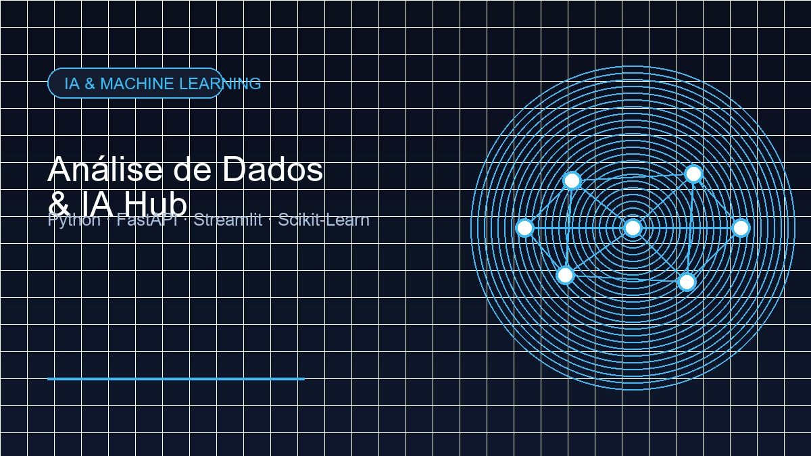
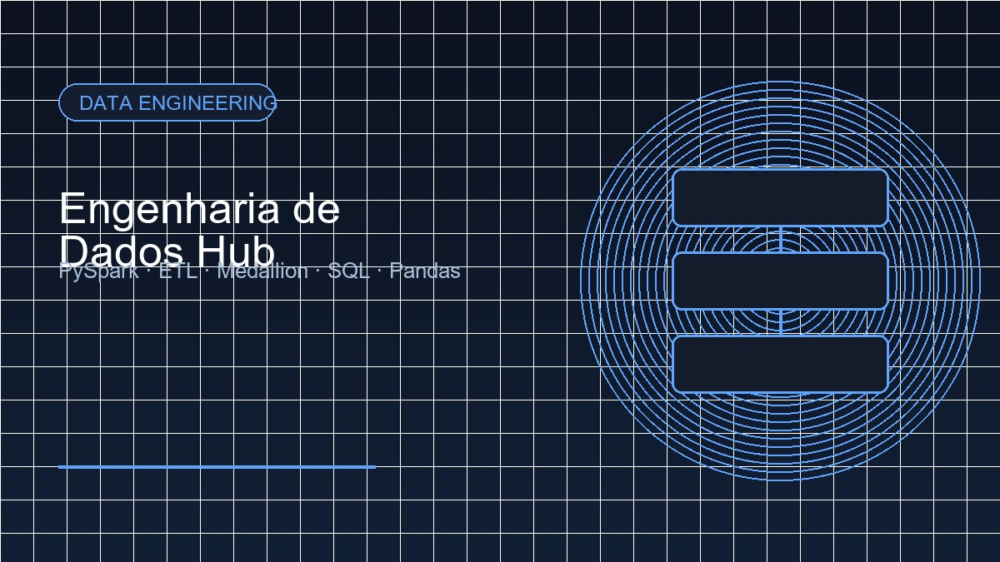
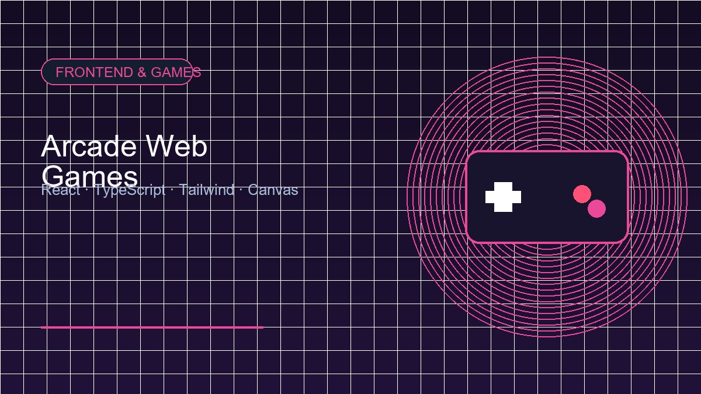
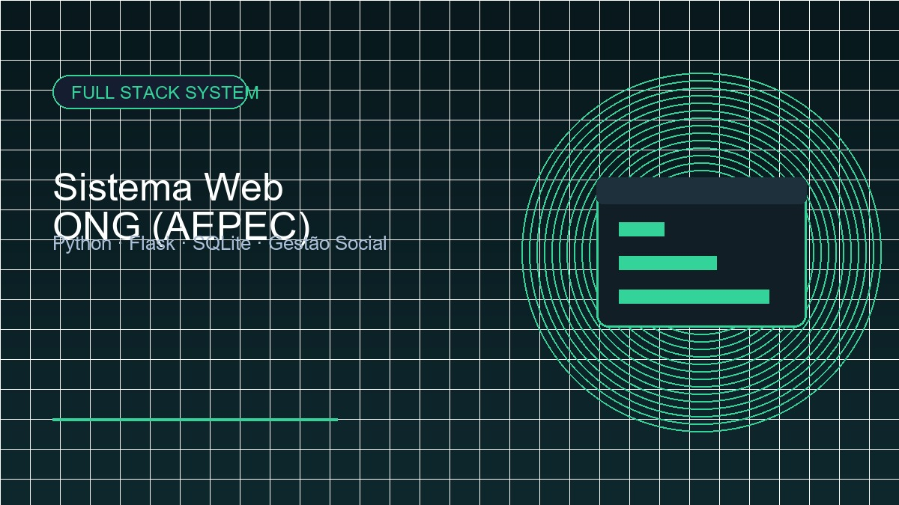

Descrição
Desenvolvimento de pipelines de extração, transformação e carga de dados (ETL), modelagem e estruturação de bancos relacionais (OracleDB, SQL Server, PostgreSQL, SQLite) e análise com Pandas e NumPy.
Olá! Eu sou
data analytics · python · sql · data & ia
Sobre mim
Desenvolvimento de pipelines de extração, transformação e carga de dados (ETL), modelagem e estruturação de bancos relacionais (OracleDB, SQL Server, PostgreSQL, SQLite) e análise com Pandas e NumPy.
Construção de aplicações escaláveis, APIs RESTful e microsserviços integrando front-end responsivo (React, Vite, JavaScript, TypeScript) com back-end em Python (Flask, Django), Node.js e C.
Otimização e automação de fluxos operacionais corporativos para redução de esforço manual, acompanhada da criação de dashboards analíticos interativos no Power BI (DAX, Power Query).
Agência Nacional do Petróleo (ANP)
2024 –
Atual
Planejamento e execução de atualizações em banco corporativo, modelagem de histórico de dados em SQL para análises comparativas e relatórios de longo prazo. Criação de scripts e pipelines ETL em Python (Pandas, NumPy), integração com OracleDB com redução de 10% nas horas mensais trabalhadas e dashboards estratégicos no Power BI.
Projeto ONG
2024
Desenvolvimento do back-end utilizando Flask e SQLite, integrado com front-end responsivo (HTML, CSS e JavaScript). Versionamento ágil de código e colaboração em equipe utilizando Git e GitHub.
Gerenciador de Supermercado
2023
Desenvolvimento em linguagem C de um sistema completo de gerenciamento de supermercado, controle rigoroso de estoque e vendas com regras de negócio personalizadas, estruturação de dados e gerenciamento de memória.
UniLaSalle-RJ (7º período em andamento)
2023 –
2027

IA & ML01 · Destaque GitHub
IA & Machine Learning · Python · FastAPI
Repositório com projetos práticos de análise de dados, inteligência artificial, machine learning e aplicações inteligentes desenvolvidas com Streamlit, FastAPI e Scikit-Learn.

Data Eng02 · Destaque GitHub
Engenharia de Dados · PySpark · ETL
Projetos de engenharia de dados, pipelines ETL, arquitetura Medallion, Data Warehouse e automação de processos corporativos com Python, PySpark e SQL.

Games03 · Destaque GitHub
Frontend & Games · React · TypeScript
Coleção de jogos e aplicações interativas desenvolvidas para explorar lógica de programação avançada e desenvolvimento frontend moderno com React, Tailwind CSS e Canvas.

Full Stack04 · Destaque GitHub
Full Stack · Python · Flask · SQLite
Sistema web desenvolvido para apoiar a gestão administrativa e processos operacionais da ONG AEPEC, com persistência SQLite e arquitetura Flask modular.
GitHub & Conexões
Código, colaboração e presença profissional.
Perfil profissional
500+
Conexões & Redes
GitHub
Repositórios & código
30+
Projetos & Repos
GitHub: @samirsousa · Data Analyst, Engenharia de Dados & IA.
Stack & ferramentas
Desenvolvido por
Samir Firmino
© 2026